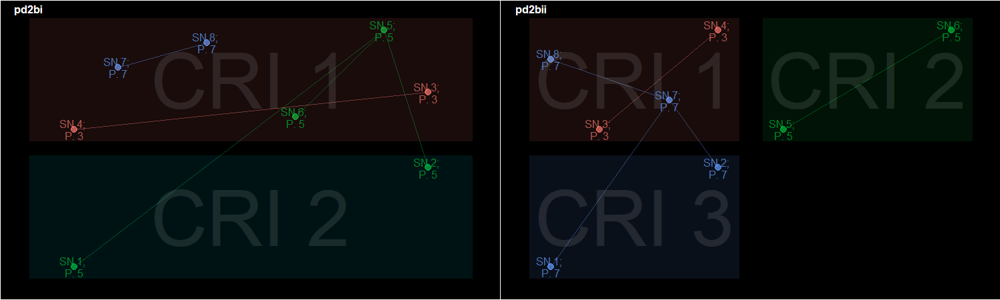
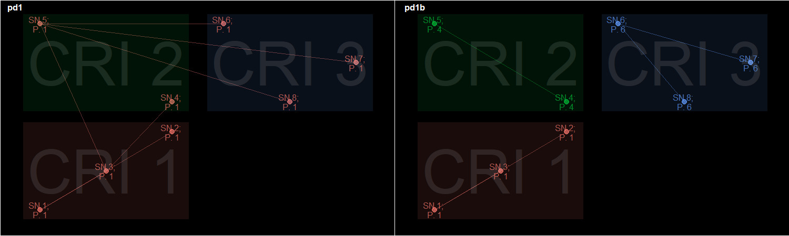

Linking datasets to consolidate information is a common task in research, particularly with those involving “big data”. Deterministic and probabilistic linkage are the two most common methods of record linkage. Deterministic record linkage is the simplest of both methods but its accuracy relies heavily on good data quality. In contrast, probabilistic record linkage improves on this by using several methods to identify, validate or score matches while accounting for data quality. However, probabilistic record linkage can be complex to implement and computationally intensive. Multistage deterministic record linkage is an approach that lies between both methods. Here, matches are identified in successive stages of different matching conditions. This makes it more robust than a simple deterministic linkage but not typically as complex or computationally intensive as probabilistic record linkage.
links() provides a convenient and flexible approach to implementing multistage deterministic record linkage in R. It allows a user to specify what constitutes a match e.g. similarity scores, text transformations or partial string matches etc. It also has mechanisms to address missing data and conflicting matches across stages of the linkage process.
The links() function assigns records to unique record-groups (pid object) based on a set of matching criteria. These are essentially group identifiers with additional information about each group stored in the slots of the pid object. See an example below.
## 3-stage linkage # Attributes to be compared at each stage attr_1 <- c(1, 1, 1, NA, NA, NA, NA, NA) attr_2 <- c(NA, NA, 2, 2, 2, NA, NA, NA) attr_3 <- c(NA, NA, NA, NA, 3, 3, 3, 3) stages <- list(attr_1 = attr_1, attr_2 = attr_2, attr_3 = attr_3) # Source of each record data_sets <- c("A", "A", "A", "A", "B", "B", "B", "B") # Dataset dfr <- cbind(as.data.frame(stages), data_sets) # Linkage dfr$pd1 <- links(stages, data_source = data_sets) # Identifiers dfr #> attr_1 attr_2 attr_3 data_sets pd1 #> 1 1 NA NA A P.1 (CRI 001) #> 2 1 NA NA A P.1 (CRI 001) #> 3 1 2 NA A P.1 (CRI 001) #> 4 NA 2 NA A P.1 (CRI 002) #> 5 NA 2 3 B P.1 (CRI 002) #> 6 NA NA 3 B P.1 (CRI 003) #> 7 NA NA 3 B P.1 (CRI 003) #> 8 NA NA 3 B P.1 (CRI 003)
There are as.data.frame and as.list methods for easy access to its components.
# Components of a `pid` identifier as.data.frame(dfr$pd1) #> pid sn pid_cri link_id pid_total iteration pid_dataset #> 1 1 1 1 1 8 1 A,B #> 2 1 2 1 1 8 1 A,B #> 3 1 3 1 1 8 2 A,B #> 4 1 4 2 3 8 2 A,B #> 5 1 5 2 3 8 3 A,B #> 6 1 6 3 5 8 3 A,B #> 7 1 7 3 5 8 3 A,B #> 8 1 8 3 5 8 1 A,B
At each stage, records are linked if their values are an exact_match(). By default, the priority of matches decreases with each subsequent stage i.e. matches at the 1st stage are superior and will not be overwritten by matches at the 2nd stage. Records with missing (NA) or unmatched values are skipped at each stage, and another attempt to match them is made in the next stage of the process.
At each stage, additional matching criteria can be supplied by with a sub_criteria object. A sub_criteria contains a set of attributes to be compared, corresponding logical tests for each attribute and corresponding logical tests for the equivalence of values in each attribute. Nested conditions is also possible by nesting a sub_criteria. Every sub_criteria must be linked to a stage (criteria). This is done by supplying every sub_criteria as a named list . Each element’s name must correspond to a stage. For example, "cr1" and "cr13" correspond to stages 1 and 13 respectively. Any unlinked sub_criteria will be ignored.
Records are assessed in iterations. If a stage has no sub_criteria, it will take one iteration to complete the stage. If a stage has a sub_criteria, multiple iterations maybe required to complete that stage.
By default, a match at one stage is always superior to a match at the next stage. See the “multistage matches” section for a different behaviour. Additionally, records with missing or unmatched values are skipped at each stage of the process. In the example below, by stage 1, records 1, 2 and 7 are either missing or unmatched values. As a result, they are skipped at stage 1 but subsequently linked together at stage 2 due to matching dates of birth with records 5 and 6.
# Attribute - Names attr_4 <- c(NA, NA, "James", "James", "Tobi", "Tobi", "Ope") # Date of birth attr_5 <- c("12/04/1957", "12/04/1957", "22/06/1973", "20/01/1980", "12/04/1957", "12/04/1957", "12/04/1957") # Dataset stages_2 <- list(attr_4 = attr_4, attr_5 = attr_5) dfr_2 <- as.data.frame(stages_2) dfr_2$pd2 <- links(stages_2) dfr_2 #> attr_4 attr_5 pd2 #> 1 <NA> 12/04/1957 P.5 (CRI 002) #> 2 <NA> 12/04/1957 P.5 (CRI 002) #> 3 James 22/06/1973 P.3 (CRI 001) #> 4 James 20/01/1980 P.3 (CRI 001) #> 5 Tobi 12/04/1957 P.5 (CRI 001) #> 6 Tobi 12/04/1957 P.5 (CRI 001) #> 7 Ope 12/04/1957 P.5 (CRI 002)
In contrast, records with matched values by a particular stage remain linked for the rest to the process even if their values at subsequent stages are different. This was the case with records 3 and 4.
To maintain the described match priority, introducing a new record that permits a match at an earlier stage will result in records being transferred between groups. In the example below, a new "Ope" record is introduced and linked to the existing "Ope" record. However, a consequence of this change is that at stage 2 (matching dates of birth), records 1 and 2 have the option of either being linked to the "Ope" or "Tobi" records. Usually, they will be linked to the "Ope" records because the link between "Ope" records is considered to have a higher priority (stage 1) than that of the "Tobi" records (stage 2). However, if the "Ope" and "Tobi" records were linked at the same stage (pd2bii), priority is given to the first group the process encounters. In the instance above, this was the "Tobi" records.
attr_4c <- attr_4b <- c(attr_4, "Ope") attr_4c[attr_4c == "Tobi"] <- NA attr_5b <- c(attr_5, "13/02/1991") # Attribute - Sex attr_4.5 <- c(NA, NA, NA, NA, "M", "M", NA, NA) stages_2bi <- list(attr_4b = attr_4b, attr_5b = attr_5b) stages_2bii <- list(attr_4c = attr_4c, attr_4.5 = attr_4.5, attr_5b = attr_5b) # Dataset 1 dfr_2b <- as.data.frame(stages_2bi) # Linkage option 1 dfr_2b$pd2bi <- links(stages_2bi) # Dataset 2 dfr_2c <- as.data.frame(stages_2bii) # Linkage option 2 dfr_2c$pd2bii <- links(stages_2bii) # Results for option 1 dfr_2b #> attr_4b attr_5b pd2bi #> 1 <NA> 12/04/1957 P.5 (CRI 002) #> 2 <NA> 12/04/1957 P.5 (CRI 002) #> 3 James 22/06/1973 P.3 (CRI 001) #> 4 James 20/01/1980 P.3 (CRI 001) #> 5 Tobi 12/04/1957 P.5 (CRI 001) #> 6 Tobi 12/04/1957 P.5 (CRI 001) #> 7 Ope 12/04/1957 P.7 (CRI 001) #> 8 Ope 13/02/1991 P.7 (CRI 001) # Results for option 2 dfr_2c #> attr_4c attr_4.5 attr_5b pd2bii #> 1 <NA> <NA> 12/04/1957 P.7 (CRI 003) #> 2 <NA> <NA> 12/04/1957 P.7 (CRI 003) #> 3 James <NA> 22/06/1973 P.3 (CRI 001) #> 4 James <NA> 20/01/1980 P.3 (CRI 001) #> 5 <NA> M 12/04/1957 P.5 (CRI 002) #> 6 <NA> M 12/04/1957 P.5 (CRI 002) #> 7 Ope <NA> 12/04/1957 P.7 (CRI 001) #> 8 Ope <NA> 13/02/1991 P.7 (CRI 001)
Figure 1: Effect of a change to the match priority 
By default, a record-group gains more records as new matches are identified in subsequent stages. This results in an acceptable but decreasing specificity with each stage. Changing expand to FALSE will restrict matches to those occurring at the same stage of the linkage process. Figure 2 and the example below shows this difference as compared to the earlier example (dfr$pd1) where expand was TRUE.
dfr$pd1b <- links(stages, expand = FALSE) dfr #> attr_1 attr_2 attr_3 data_sets pd1 pd1b #> 1 1 NA NA A P.1 (CRI 001) P.1 (CRI 001) #> 2 1 NA NA A P.1 (CRI 001) P.1 (CRI 001) #> 3 1 2 NA A P.1 (CRI 001) P.1 (CRI 001) #> 4 NA 2 NA A P.1 (CRI 002) P.4 (CRI 002) #> 5 NA 2 3 B P.1 (CRI 002) P.4 (CRI 002) #> 6 NA NA 3 B P.1 (CRI 003) P.6 (CRI 003) #> 7 NA NA 3 B P.1 (CRI 003) P.6 (CRI 003) #> 8 NA NA 3 B P.1 (CRI 003) P.6 (CRI 003)
Figure 2: Group expansion

In contrast, when shrink is TRUE, record-groups lose records as new matches are identified in subsequent stages. This results in increasing specificity with each stage. At a given stage, if all records in a record-group have missing or non-matching values, the record-group will not change otherwise, it is split into subgroups with matching criteria (and sub_criteria where applicable). Note that the expand and shrink functionalities are not complimentary i.e. the outcome when expand is FALSE is not always the same outcome when shrink is TRUE. However, when shrink is TRUE, expand is automatically set to FALSE regardless of the user’s input. See an example of this difference below.
# Attributes to be compared at each stage attr_6 <- c(1, 1, 1, 1, 2, 2, 2, 2) attr_7 <- c(NA, NA, 2, 2, NA, NA, NA, NA) attr_8 <- c("3c", "3c", "3c", "3c", "3a", "3a", "4a", "4b") stages_3 <- list(attr_6 = attr_6, attr_7 = attr_7, attr_8 = attr_8) dfr_3 <- cbind(as.data.frame(stages_3)) dfr_3$pd3a <- links(stages_3, expand = FALSE) dfr_3$pd3b <- links(stages_3, shrink = TRUE) dfr_3 #> attr_6 attr_7 attr_8 pd3a pd3b #> 1 1 NA 3c P.1 (CRI 001) P.1 (CRI 003) #> 2 1 NA 3c P.1 (CRI 001) P.1 (CRI 003) #> 3 1 2 3c P.1 (CRI 001) P.3 (CRI 003) #> 4 1 2 3c P.1 (CRI 001) P.3 (CRI 003) #> 5 2 NA 3a P.5 (CRI 001) P.5 (CRI 003) #> 6 2 NA 3a P.5 (CRI 001) P.5 (CRI 003) #> 7 2 NA 4a P.5 (CRI 001) P.7 (No hits) #> 8 2 NA 4b P.5 (CRI 001) P.8 (No hits)
The sub_criteria argument is used to supply additional matching conditions to a stage of the linkage process. This helps strengthen criteria match rules. All sub_criteria must be linked to a criteria. If there’s no criteria, a place holder can be used in its place (see dfr_4$pd5). In the example below, additional matching criteria are used to strengthen a linkage on identical name values.
data(Opes); Opes #> rd_id name department hair_colour date_of_birth db_pt1 db_pt2 db_pt3 #> 1 1 Ope Procurement Brown 23/03/1986 23/03 23/1986 03/1986 #> 2 2 Ope Security Brown 23/03/1986 23/03 23/1986 03/1986 #> 3 3 Ope Security Brown 23/03/1968 23/03 23/1968 03/1968 #> 4 4 Ope Publishing Green 01/02/1985 01/02 01/1985 02/1985 #> 5 5 Ope Publishing Teal 02/01/1985 02/01 02/1985 01/1985 #> 6 6 Ope Publishing Grey 11/03/1964 11/03 11/1964 03/1964 #> 7 7 Ope Publishing White 11/03/1964 11/03 11/1964 03/1964 #> 8 8 Ope Procurement Black 11/10/1985 11/10 11/1985 10/1985 # `criteria` AND matching department sub_cri_1 <- sub_criteria(Opes$department) # `criteria` AND matching (department OR hair_colour) sub_cri_2 <- sub_criteria(Opes$department, Opes$hair_colour) # `criteria` AND matching (department AND hair_colour AND date_of_birth) sub_cri_3 <- sub_criteria(Opes$department, Opes$hair_colour, Opes$date_of_birth, operator = "and") # `criteria` AND matching ((department OR hair_colour) AND date_of_birth) sub_cri_4 <- sub_criteria(sub_cri_2, Opes$date_of_birth, operator = "and") # `criteria` AND matching (any two parts of the date of birth) sub_cri_5 <- sub_criteria(Opes$db_pt1, Opes$db_pt2, Opes$db_pt3) Opes$pd4a <- links(criteria = Opes$name, sub_criteria = list(cr1 = sub_cri_1)) Opes$pd4b <- links(criteria = Opes$name, sub_criteria = list(cr1 = sub_cri_2)) Opes$pd4c <- links(criteria = Opes$name, sub_criteria = list(cr1 = sub_cri_3)) Opes$pd4d <- links(criteria = Opes$name, sub_criteria = list(cr1 = sub_cri_4)) Opes$pd4e <- links(criteria = list(Opes$name, Opes$name), sub_criteria = list(cr1 = sub_cri_4, cr2 = sub_cri_5)) Opes[c("name", "department", "hair_colour", "date_of_birth", "pd4a", "pd4b", "pd4c", "pd4d", "pd4e")] #> name department hair_colour date_of_birth pd4a pd4b #> 1 Ope Procurement Brown 23/03/1986 P.1 (CRI 001) P.1 (CRI 001) #> 2 Ope Security Brown 23/03/1986 P.2 (CRI 001) P.1 (CRI 001) #> 3 Ope Security Brown 23/03/1968 P.2 (CRI 001) P.1 (CRI 001) #> 4 Ope Publishing Green 01/02/1985 P.4 (CRI 001) P.4 (CRI 001) #> 5 Ope Publishing Teal 02/01/1985 P.4 (CRI 001) P.4 (CRI 001) #> 6 Ope Publishing Grey 11/03/1964 P.4 (CRI 001) P.4 (CRI 001) #> 7 Ope Publishing White 11/03/1964 P.4 (CRI 001) P.4 (CRI 001) #> 8 Ope Procurement Black 11/10/1985 P.1 (CRI 001) P.1 (CRI 001) #> pd4c pd4d pd4e #> 1 P.1 (No hits) P.1 (CRI 001) P.1 (CRI 001) #> 2 P.2 (No hits) P.1 (CRI 001) P.1 (CRI 001) #> 3 P.3 (No hits) P.3 (No hits) P.1 (CRI 002) #> 4 P.4 (No hits) P.4 (No hits) P.4 (No hits) #> 5 P.5 (No hits) P.5 (No hits) P.5 (No hits) #> 6 P.6 (No hits) P.6 (CRI 001) P.6 (CRI 001) #> 7 P.7 (No hits) P.6 (CRI 001) P.6 (CRI 001) #> 8 P.8 (No hits) P.8 (No hits) P.8 (No hits)
Attributes in a sub_criteria can be compared with user defined logical tests. These are supplied to the match_funcs argument of sub_criteria(). Regardless of the complexity of these tests, they must meet 3 requirements:
x and y, where y is the value for one observation being compared against the value of all other observations - x.TRUE or FALSE.A relatively simple use case for this functionality is to compare attributes with string comparators. The example below uses Jaro-Winkler and soundex similarities scores for a pair of values to determine matches and non-matches. These similarity scores are calculated using the stringdist package.
data(staff_records); dfr_4 <- staff_records[c("forename")] dfr_4$forename #> [1] "James" NA "Jamey" "" "Derrick" "Darrack" "Christie" # Logical test 1 - Similarity score of 70% or more jw_func <- function(x, y){ score <- 1 - stringdist::stringdist(x, y, "jw") score > .7 } # Logical test 2 - Matching Soundex soundex_func <- function(x, y){ score <- 1 - stringdist::stringdist(x, y, "soundex") as.logical(score) } sub_cri_6 <- sub_criteria(dfr_4$forename, dfr_4$forename, match_funcs = c(jw_func, soundex_func), operator = "or") dfr_4$pd5 <- links(criteria = "place_holder", sub_criteria = list(cr1 = sub_cri_6)) dfr_4 #> forename pd5 #> 1 James P.1 (CRI 001) #> 2 <NA> P.2 (No hits) #> 3 Jamey P.1 (CRI 001) #> 4 P.4 (No hits) #> 5 Derrick P.5 (CRI 001) #> 6 Darrack P.5 (CRI 001) #> 7 Christie P.7 (No hits)
The complexity of a user-defined logical test can range from relatively simple to complex use cases such as that implemented in links_wf_probabilistic(). links_wf_probabilistic() is a wrapper function of links() using a specific sub_criteria to achieve probabilistic record linkage. There are a few differences between links_wf_probabilistic() and the typical implementation of probabilistic record linkage. These are summarised below.
Table 1: Difference between the typical approach to probabilistic record linkage and links_wf_probabilistic().
| Aspects | Typical approach | links_wf_probabilistic |
|---|---|---|
| Implementation | Every possible record pair is created before being compared | Sets of record pairs are created and compared in iterations |
| Score-thresholds | Chosen after review of all matches | Required before the linkage process |
| Accepted matches | Chosen after review of all matches | Chosen within each iteration of the linkage process |
Due to these differences, there are two functionalities to help select a score-threshold before the actual linkage. The first is to use prob_score_range() to review the range of scores attainable for a given dataset. The second is to use the id_1 and id_2 arguments to return the scores for specific record pairs. Calculation of the score-threshold is based on Fellegi and Sunter (1969) model for deciding if two records belong to the same entity. See help(links_wf_probabilistic) for a more detailed explanation of the implementation of this method. See below for examples of how links_wf_probabilistic() can be used.
data(missing_staff_id); dfr_5 <- missing_staff_id[c("staff_id", "initials", "hair_colour", "branch_office")] dfr_5 #> staff_id initials hair_colour branch_office #> 1 NA G.D. Brown Republic of Ghana #> 2 NA B.G. Teal France #> 3 NA X.P. <NA> <NA> #> 4 NA X.P. Green <NA> #> 5 NA <NA> Green France #> 6 2 G.D. Dark brown Ghana #> 7 2 G.D. Brown Republic of Ghana score_range <- prob_score_range(attribute = as.list(dfr_5)) score_range #> $minimum_score #> [1] -16.80229 #> #> $mid_scorce #> [1] -4.226915 #> #> $maximum_score #> [1] 8.348455 # Logical test - Matching last word in `hair_colour` and `branch_office` last_word_wf <- function(x) tolower(gsub("^.* ", "", x)) last_word_cmp <- function(x, y) last_word_wf(x) == last_word_wf(y) prob_pids2 <- links_wf_probabilistic(attribute = as.list(dfr_5), cmp_func = c(diyar::exact_match, diyar::exact_match, last_word_cmp, last_word_cmp), score_threshold = score_range$mid_scorce) prob_pids2 #> $pid #> [1] "P.1 (CRI 001)" "P.2 (No hits)" "P.3 (No hits)" "P.4 (No hits)" #> [5] "P.5 (No hits)" "P.1 (CRI 001)" "P.1 (CRI 001)" #> #> $pid_weights #> sn_x sn_y cmp.staff_id cmp.initials cmp.hair_colour cmp.branch_office #> [1,] 1 7 0 1 1 1 #> [2,] 2 2 NA NA NA NA #> [3,] 3 3 NA NA NA NA #> [4,] 4 4 NA NA NA NA #> [5,] 5 5 NA NA NA NA #> [6,] 6 7 1 1 1 1 #> [7,] 7 7 1 1 1 1 #> cmp.weight cmp.threshold prb.staff_id prb.initials prb.hair_colour #> [1,] 3 NA -4.321928 1.148392 1.733354 #> [2,] NA NA NA NA NA #> [3,] NA NA NA NA NA #> [4,] NA NA NA NA NA #> [5,] NA NA NA NA NA #> [6,] 4 NA 1.733354 1.148392 2.733354 #> [7,] 4 NA 1.733354 1.148392 1.733354 #> prb.branch_office prb.weight prb.threshold #> [1,] 1.733354 0.2931724 1 #> [2,] NA NA NA #> [3,] NA NA NA #> [4,] NA NA NA #> [5,] NA NA NA #> [6,] 2.733354 8.3484549 1 #> [7,] 1.733354 6.3484549 1 # Results for specific record pairs prob_pids3 <- links_wf_probabilistic(attribute = as.list(dfr_5), cmp_func = c(diyar::exact_match, diyar::exact_match, last_word_cmp, last_word_cmp), score_threshold = score_range$mid_scorce, id_1 = c(1, 1, 1), id_2 = c(6, 7, 4)) prob_pids3 #> $pid #> NULL #> #> $pid_weights #> sn_x sn_y cmp.staff_id cmp.initials cmp.hair_colour cmp.branch_office #> [1,] 1 6 0 1 1 1 #> [2,] 1 7 0 1 1 1 #> [3,] 1 4 0 0 0 0 #> cmp.weight cmp.threshold prb.staff_id prb.initials prb.hair_colour #> [1,] 3 NA -4.321928 1.148392 1.733354 #> [2,] 3 NA -4.321928 1.148392 1.733354 #> [3,] 0 NA -4.321928 -3.514573 -3.836501 #> prb.branch_office prb.weight prb.threshold #> [1,] 1.733354 0.2931724 1 #> [2,] 1.733354 0.2931724 1 #> [3,] -3.836501 -15.5095038 0
links() is primarily designed for multistage record linkage and offers convenience in handling complex matching conditions and missing data. The more complex the scenario, the more likely its convenience outweighs the complexity of scripting these complex issues. Simple matching conditions or one-stage linkages are possible with links() but will take slightly more time than base R alternatives (see pd_8e).
links() is implemented as a loop. Each criteria costs one iteration, while a sub_criteria costs as many iterations as it takes to compare all record pairs. The time taken to complete one iteration can differ in different machines however, the number of iterations required to complete the linkage process is constant for the same set of linkage criteria and options. Regardless, each additional iteration costs additional processing time. There are three main ways of reducing the number of iterations required for the linkage. These are summarised below.
Where possible, express a sub_criteria as a criteria. A sub_criteria with an exact_match() as its logical test(s) and an "and" operator should be expressed as a criteria. For example, Opes$pd4c was created with a sub_criteria and it took 8 iterations to complete the process.
summary(Opes$pd4c) #> Iterations: 8 #> Total records: 8 #> by matching criteria: #> "Skipped": 8 #> Total record groups: #> by group dataset: #> N/A #> by records per group: #> "1": 8
However, the same outcome can be achieved with a criteria and will only take one iteration to complete the same process
sub_cri <- paste0(Opes$department, Opes$hair_colour, Opes$date_of_birth, sep = "-") new_cri <- paste0(Opes$name, " ", sub_cri) Opes$pd4c2 <- links(criteria = new_cri) max(Opes$pd4c2@iteration) #> [1] 1 # Same outcome - identical identifiers Opes$pd4c; Opes$pd4c2 #> [1] "P.1 (No hits)" "P.2 (No hits)" "P.3 (No hits)" "P.4 (No hits)" #> [5] "P.5 (No hits)" "P.6 (No hits)" "P.7 (No hits)" "P.8 (No hits)" #> [1] "P.1 (No hits)" "P.2 (No hits)" "P.3 (No hits)" "P.4 (No hits)" #> [5] "P.5 (No hits)" "P.6 (No hits)" "P.7 (No hits)" "P.8 (No hits)"
Similarly, the strata argument can also be used to supply a blocking attribute that restricts the linkage process to subsets of the dataset. This results in fewer iterations.
sub_criteria
It costs additional processing time to implement each logical test in a sub_criteria. Where possible, multiple logical tests should be condensed into few sets, particularly if they are to be used on the same attribute. In the dfr_4$pd5 example, the jw_func and soundex_func logical tests can be rewritten as jw_soundex_func and will lead to the same outcome as dfr_4$pd5.
# Logical test - Similarity score of 70% or more OR matching Soundex jw_soundex_func <- function(x, y) jw_func(x, y) | soundex_func(x, y) sub_cri_6b <- sub_criteria(dfr_4$forename, match_funcs = jw_soundex_func) dfr_4$pd5b <- links(criteria = "place_holder", sub_criteria = list(cr1 = sub_cri_6b)) # Same outcome - identical identifiers all(dfr_4$pd5 == dfr_4$pd5b) #> [1] TRUE
The relative simplicity of this logical test and the small number of records being assessed results in a negligible time difference between both approaches. However, the time difference will become more apparent with larger datasets and more complex logical tests.
The easiest way of doing this is to exclude duplicate records prior to the linkage process. These duplicate rows can be linked back to the group identifier if they are indexed before exclusion. In addition, there are two functionalities handled by the recursive and check_duplicates arguments, which aim to use the minimum number of records possible for the linkage process without affecting the match priority. These are described in the section below.
check_duplicates
At a given stage, when a value of an attribute (y) is checked against all other values (x), it often does not need to be checked again. Therefore, duplicate values of y can be skipped. This is the default behaviour for links(). In the example below, doing this takes 1 iteration compared to 10 iterations when check_duplicates is set to TRUE.
# Dataset dfr_6 <- data.frame(attr_1 = rep(1, 10)) # Logical test - Absolute difference between values is > 0 rng_1p_func <- function(x, y){ abs(y - x) > 0 } sub_cri_7 <- sub_criteria(dfr_6$attr_1, match_funcs = rng_1p_func) dfr_6$pd_7a <- links("place_holder", sub_criteria = list("cr1" = sub_cri_7), check_duplicates = TRUE) dfr_6$pd_7b <- links("place_holder", sub_criteria = list("cr1" = sub_cri_7), check_duplicates = FALSE) # Same outcome - identical identifiers all(dfr_6$pd_7a == dfr_6$pd_7b) #> [1] TRUE # but different number of iterations max(dfr_6$pd_7a@iteration); max(dfr_6$pd_7b@iteration) #> [1] 10 #> [1] 1
To achieve this, logical tests have to be passed to the equal_funcs argument when creating the relevant sub_criteria. These are used to identify duplicate values which will then be skipped regardless of if they are linked or not. By default, this is an exact_match() but might need to be changed if the attributes are not one of the 6 basic atomic vector types. Additionally, only records with duplicate values in all attributes are skipped. If a second attribute is added making the combination less unique, fewer records will be skipped. This is because the new combination of attributes may yield matches. In the example below, setting check_duplicates to FALSE now takes 3 iterations because there were fewer duplicate combinations of attr_1 and attr_2.
# Attribute 2 dfr_6$attr_2 <- c(rep(1, 3), rep(2, 3), rep(3, 4)) # logical test - Difference between values is > 0 rng_1p_func <- function(x, y){ y - x > 0 } sub_cri_8 <- sub_criteria(dfr_6$attr_1, dfr_6$attr_2, match_funcs = rng_1p_func, equal_funcs = diyar::exact_match) dfr_6$pd_7c <- links("place_holder", sub_criteria = list("cr1" = sub_cri_8), check_duplicates = TRUE) dfr_6$pd_7d <- links("place_holder", sub_criteria = list("cr1" = sub_cri_8), check_duplicates = FALSE) # Same outcome - identical identifiers all(dfr_6$pd_7c@iteration == dfr_6$pd_7d@iteration) #> [1] FALSE # but different number of iterations max(dfr_6$pd_7c@iteration); max(dfr_6$pd_7d@iteration) #> [1] 10 #> [1] 3
recurisve
At every iteration (not stage), matching records can either be included or excluded from subsequent checks during the same linkage stage. Excluding such records ultimately reduces the overall processing time but this can lead to different outcomes depending on the nature of the attribute being compared. If the attribute is to be compared in such a way that matching records can spawn new matches, having recurisve as FALSE will miss these links. The example below demonstrates this.
# Dataset dfr_7 <- data.frame(attr_1 = 1:10, stringsAsFactors = FALSE) # Logical test - Absolute difference of less than 4 rng_l4_func <- function(x, y) abs(y - x) < 4 sub_cri_9 <- sub_criteria(dfr_7$attr_1, match_funcs = rng_l4_func) dfr_7$pd_8a <- links("place_holder", sub_criteria = list("cr1" = sub_cri_9), recursive = TRUE) dfr_7$pd_8b <- links("place_holder", sub_criteria = list("cr1" = sub_cri_9), recursive = FALSE) # Different outcomes - different identifiers dfr_7 #> attr_1 pd_8a pd_8b #> 1 1 P.1 (CRI 001) P.1 (CRI 001) #> 2 2 P.1 (CRI 001) P.1 (CRI 001) #> 3 3 P.1 (CRI 001) P.1 (CRI 001) #> 4 4 P.1 (CRI 001) P.1 (CRI 001) #> 5 5 P.1 (CRI 001) P.5 (CRI 001) #> 6 6 P.1 (CRI 001) P.5 (CRI 001) #> 7 7 P.1 (CRI 001) P.5 (CRI 001) #> 8 8 P.1 (CRI 001) P.5 (CRI 001) #> 9 9 P.1 (CRI 001) P.9 (CRI 001) #> 10 10 P.1 (CRI 001) P.9 (CRI 001) # and different number of iterations max(dfr_7$pd_8a@iteration); max(dfr_7$pd_8b@iteration) #> [1] 7 #> [1] 3
In contrast, if the attributes are to be compared in such a way that matches will not spawn new matches, then having recurisve as FALSE will lead to the same outcome but with the added benefit of taking fewer iterations to complete the same process. The example below demonstrates this. attr_10 contains 26 unique values therefore, 26 iterations are required to complete the linkage. However, if recursive is TRUE then at each iteration 260,000 records are assessed. In contrast, when recursive is FALSE then 10,000 less records are assessed at each subsequent iteration.
# dataset attr_10 <- rep(LETTERS, 10000) sub_cri_10 <- sub_criteria(attr_10) # Fast system.time( pd_8c <- links("place_holder", sub_criteria = list("cr1" = sub_cri_10), recursive = TRUE) ) #> user system elapsed #> 12.55 1.97 14.64 # Faster system.time( pd_8d <- links("place_holder", sub_criteria = list("cr1" = sub_cri_10), recursive = FALSE) ) #> user system elapsed #> 5.95 0.96 6.93 # Fastest system.time( pd_8e <- match(attr_10, attr_10) ) #> user system elapsed #> 0 0 0 # Same outcomes - identical identifiers all(pd_8c == pd_8d) & all(pd_8c == pd_8e) #> [1] TRUE # and same number of iterations max(pd_8c@iteration); max(pd_8d@iteration) #> [1] 26 #> [1] 26
As mentioned earlier, simple one-stage linkages such as the example above can be more efficiently handled with base R alternatives as shown with pd_8e. However, in this instance, links() has been used to demonstrate its recursive feature, which can also be used in more complex multistage linkages.